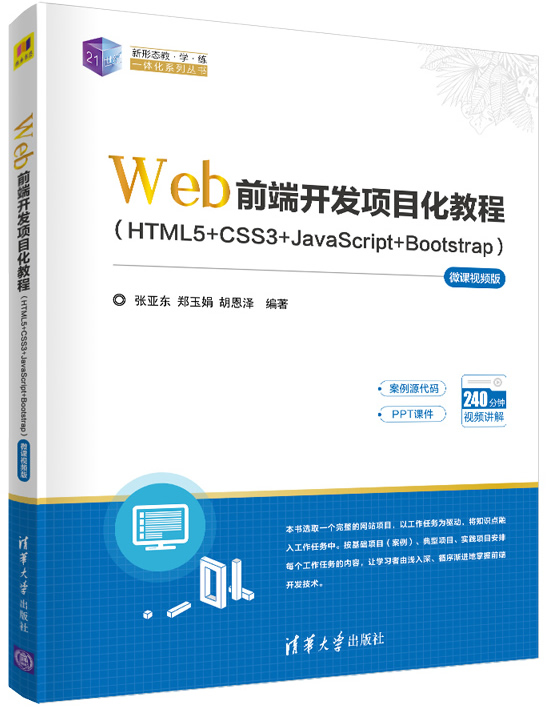

首页 > 书籍下载
《Web前端开发项目化教程》PDF下载（高清完整版）
|  | 作者：张亚东、郑玉娟、胡恩泽 |
| 出版时间：2022年08月01日 | |
| 出版社： 上海交通大学出版社 | |
| ISBN：9787313271075 | |
| 总页数：284 | |
| 总字数：39W |
这是一本关于 Web应用开发的书，本书主要介绍了 HTML、CSS 和 JavaScript 三大基础开发技术，另外还对 Bootstrap 响应式开发技术做了讲解。适合用作教材或从事网页制作、网站开发、网面编程、美工设计等工作的人员做参考。
这里提供的是《Web前端开发项目化教程》的高清 PDF 下载，内容完整，附带目录标签。
随着互联网技术的不断发展，“互联网+”已经深入到各个领域。网页作为信息呈现的重要载体，在设计与制作上也显得尤为重要。不管是在校的学生，还是正在从事 Web 前端开发工作的人员，我们都要不断地学习新的技术来提升自己的专业技能，这样才能更高效地解决项目开发过程中遇到的问题。
这本书相对比其它同类书籍，主要特色体现在以下三方面：
1）知识体系完整，通过大量示例来讲解基础知识点，读者更容易掌握；
2）采用任务驱动式，将一个完整的网站拆分为多个任务，让读者在此过程中逐步了解网站建设的思路和开发流程；
3）每章节末尾设置了动手实践项目，培养读者学以至用、举一反三的能力。
书籍目录
- 第1章 Web前端开发职业前景与必要认知
- 1.1 Web前端开发岗位现状
- 1.2 Web概述
- 1.3 Web标准
- 第2章 设计“盛和景园”网站
- 2.1 任务一： “盛和景园”房产网站需求分析的建立
- 2.2 任务二： 网站首页UI设计
- 2.3 课后实践
- 第3章 制作“盛和景园”网站
- 3.1 任务一： 网站效果图的切割与导出
- 3.2 任务二： 创建“盛和景园”网站站点
- 3.3 任务三： 制作“盛和景园”网站页面
- 3.4 课后实践
- 第4章 制作“盛和景园”网站交互行为
- 4.1 项目实现
- 4.2 课后实践
- 第5章 制作响应式“盛和景园”网站
- 5.1 弹性布局——Flex布局
- 5.2 媒体查询
- 5.3 Bootstrap
- 5.4 扩展
- 5.4 应用Bootstrap制作响应式“盛和景园”网站
- 5.5 课后实践
书籍下载
一键登录，免费下载完整版 PDF，文件名称：《Web前端开发项目化教程》.pdf